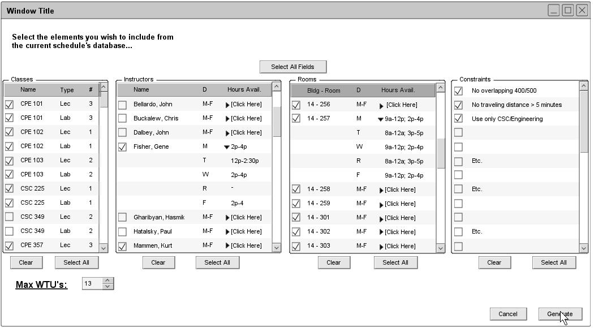

Figure 7: Generate window - Blank
Section 2.2: Basic Schedule Generation
This introductory scenario depicts an appropriately-privileged user generating a basic schedule for an particular term. A user's privileges are determined by another, alternate login system external to the Scheduler Tool. This view assumes a previously populated database of instructors, classes, rooms, and schedule preferences. For details on how these databases are populated, refer to Section 2.3. This example also assumes that a user has already created a schedule project view the File->New command.
To begin choosing how he/she wishes to generate a schedule, the user selects Schedule-->Generate from the Schedule menu, illustrated below in figure 7.
Figure 7: Generate window - Blank
The user is presented with a window populated by several, scrollable menus. Each corresponds to a variable of schedule generation (classes, professors, rooms, and constraints). A user may select certain entries within each menu that he/she wishes to incorporate into the schedule. To select a particular entry, a user need only to check the box besides each of their particular choices. For convenience, several Select All buttons have been placed under each of the given menus. Since it is altogether likely that most schedules will contain all entries within each menu, this allows the user to easily unselect key menu entries which represent rare exceptions. (A single professor going on sabbatical may be excluded by hitting Select All and then having his/her entry "unchecked" from the "Professor" list). If a user wishes to unselect an entire category, the Clear button under each list can be used to uncheck all entries in a corresponding menu. Additionally, an Everything button resides above all menus within the window, allowing the user to select every variable of every menu with a single button.
Within the lists for instructors and rooms, the "Hours Avail." title is worth noting. If each list were to dislpay every available time slot for professors and teachers, each list would be unreasonably long. In light of this, each entry under "Hours Avail." is displayed in the form of a drop-down. Should the user wish to see available times of a particular entry, he/she can click the [Click Here] entry to list the detailed availability of a professor/room. In figure 7, the available times of professor Gene Fisher and room 247 (in building 14) are displayed in detail.
Additionally, a Maximum WTU's field has been placed to allow an "on-the-fly" constraint for the maximum number of WTU's to be allowed per professor. (In future designs, this could be incorporated into the "Adding/Editing/Removing Constraints function). An empty field or a "0" represents a no-WTU limit.
Also, the "Staff" instructor and "TBA" location (used when no other instructor/location is available) are not present in their respective fields. Both of these entries are selected by default during generation, and thus are not available for selection by the user.
Below, figure 8 details a possible combination of choices for schedule geneartion.

Figure 8: Generate window - Filled
This scenario generates a scheduling with the following attributes: all classes, excluding CPE 102 and CSC 225; all instructors; all class rooms, excluding 14-247 and 14-249; all (3) constraints, to prevent 400/500 level classes from overlapping, limit the travel distance between classes (esp. lec/lab) to no more than 5 minutes, and use only rooms in the CSC/Engineering building(s); allow each instructor a maximum WTU count of 13.
After selecting the Generate command, the Scheduling Tool sets to work creating a scheduling based on the requirements it was given in Figure 8. When it has generated a schedule, the Scheduler Tool presents the user with a default view of the schedule, illustrated in Figure 9.

Figure 9: Generate - Sample
A generated schedule can be saved appropriately be selecting the File->Save or File->Save As commands.
prev: ui-student | next: database management | up: functional requirements | index: index